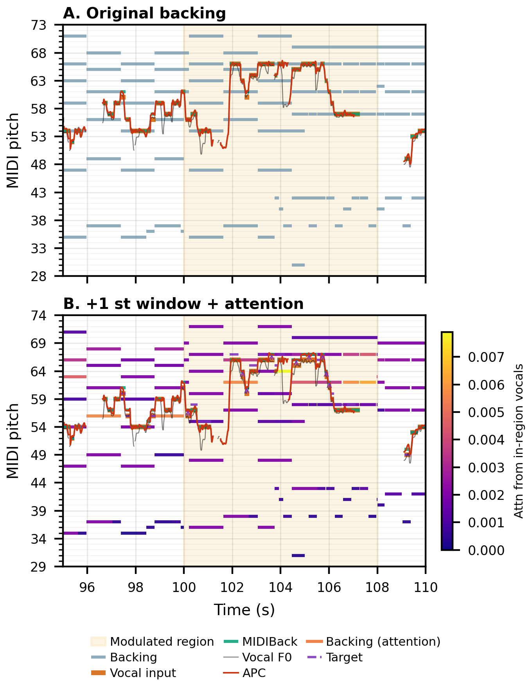

Held-vocal case study
For each shift/window: (1) original mix, (2) mix of original vocal with transposed backing, (3) MIDIBack-corrected vocal over the same transposed backing. Clips cropped to the window with ±1 s padding.
Primary example: Sonovox parent 3726. Shifts: ±0.25, ±0.5, ±1 semitone.
Loading catalog…

Pitch view for the 3726 modulation cherry (paper figure).